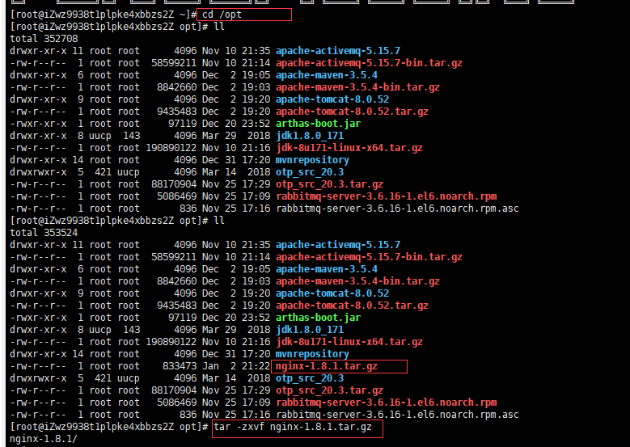
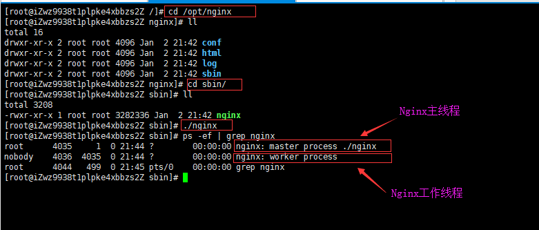
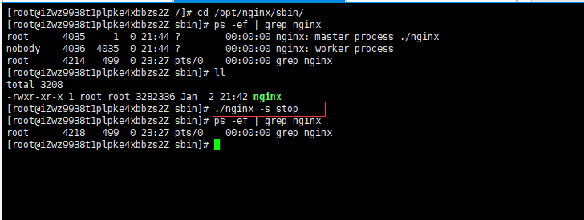
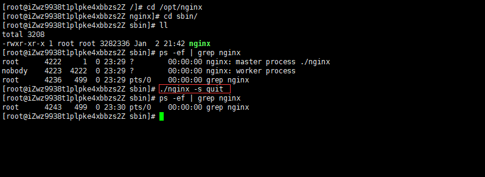

安装Nginx之前需要安装一些必要的库
gcc
安装nginx需要先将官网下载的源码进行编译，编译依赖gcc环境，如果没有gcc环境，需要安装gcc
yum install gcc-c++
PCRE
PCRE(Perl Compatible Regular Expressions)是一个Perl库，包括 perl 兼容的正则表达式库。nginx的http模块使用pcre来解析正则表达式，所以需要在linux上安装pcre库。
注：pcre-devel是使用pcre开发的一个二次开发库。nginx也需要此库。
yum install -y pcre pcre-devel
zlib
zlib库提供了很多种压缩和解压缩的方式，nginx使用zlib对http包的内容进行gzip，所以需要在linux上安装zlib库。
yum install -y zlib zlib-devel
openssl
OpenSSL 是一个强大的安全套接字层密码库，囊括主要的密码算法、常用的密钥和证书封装管理功能及SSL协议，并提供丰富的应用程序供测试或其它目的使用。
nginx不仅支持http协议，还支持https（即在ssl协议上传输http），所以需要在linux安装openssl库。
yum install -y openssl openssl-devel
编译安装Nginx
从Nginx官网上下载源码包（这里下载的是nginx-1.8.1.tar.gz），并上传到服务器的/opt目录下

进入nginx解压目录，配置nginx编译参数如下：
./configure \
--prefix=/opt/nginx \ 安装目录位置
--pid-path=/var/run/nginx/nginx.pid \ 启动的时候,进程描述文件保存位置和进程文件名
--lock-path=/var/lock/nginx.lock \ 锁定文件
--error-log-path=/opt/nginx/log/error.log \ 错误日志
--http-log-path=/opt/nginx/log/access.log \ 访问日志
--with-http_gzip_static_module \ 解压压缩模式
--http-client-body-temp-path=/var/temp/nginx/client \ 客户端定义
--http-proxy-temp-path=/var/temp/nginx/proxy \ 代理临时目录位置.
--http-fastcgi-temp-path=/var/temp/nginx/fastcgi \ 快速访问临时目录
--http-uwsgi-temp-path=/var/temp/nginx/uwsgi \ sgi访问目录
--http-scgi-temp-path=/var/temp/nginx/scgi scgi访问临时目录
注意：上面这些配置参数可以通过./configure --help查看详细
注意：由于nginx可以创建临时目录的自定义使用目录. 但是不能创建临时目录的父目录，因此如果讲上述临时文件目录指定为/var/temp/nginx，需要手动 mkdir -p /var/temp/nginx
运行make以及make install
启动Nginx

强制停止Nginx
强制停止Nginx的命令是：nginx -s stop，这个命令会立即断开所有连接

优雅停止Nginx
优雅停止Nginx的命令是：nginx -s quit，这个命令不会立即断开所有连接，而是处理完现有连接后再停掉Nginx

Nginx加入系统服务并设置开机启动
待补充。。。